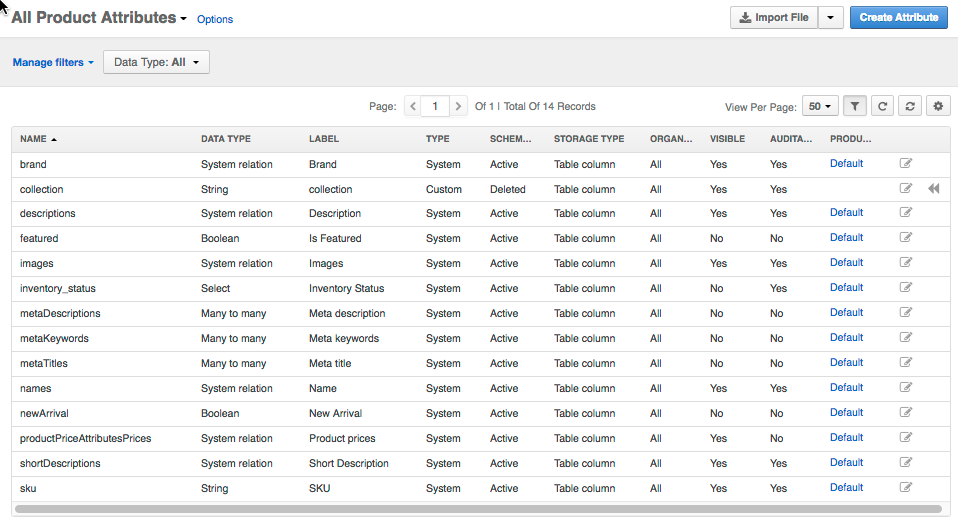

You can control the way product information is structured, as well as what default and custom blocks it contains for a particular type of products. The products of the same type belong to the same product family and share the same product information (set of product attributes). A special price attribute helps you store the price related information that may be easily reused when you plan you prices on the website.
When you create a product, you bind it to the product family. It may define additional group of attributes shared among the multiple products of the same type (e.g. software vs services, heavy industry equipment vs fashion products).
A product attribute is a special type of custom field in the product details. For product attributes, OroCommerce enables you to manage and group attributes that are unique to a special product family. By adding the product attributes only to the product families they fit, you can limit the product data to the necessary characteristics.
For example, when your OroCommerce store sells TVs and T-shirts, these items share some generic attributes (e.g. name, vendor), and differ in the remaining attributes set. For example, there might be a Screen properties group that contains resolution, diagonal, and matrix that should be linked to the products in the TV product family. For the T-shirts family, the linked attribute group may have color, size, material, fit and care guidance (washing, ironing, dry cleaning, etc).
By default, OroCommerce comes with the following system product attributes:
Add new product attributes to introduce new custom parameters in your product details. Include product attributes into the new or existing attribute group in one or multiple product families.
Note
System attributes are shared among all product families. You can reorganize the way system attributes are grouped, but you cannot remove a product attribute from the product family.
See the Product Attributes topic for more information.
A product family is a set of the product attributes that are enough to store complete information about the products of a similar type (e.g., TV attributes vs T-shirts attributes). In the product family, attributes are organized into attribute groups that are displayed as titled sections on the OroCommerce front store.
By default, there is a product family that groups all system attributes. System attributes are mandatory for any product family as they contain core product details.
Note
You can rearrange the groups and attributes in the groups inside the family. Out of the box, these system attributes are organized into the following structure:
See the Product Families topic for more information.
Price attributes are custom parameters, like manufacturer’s suggested retail price (MSRP) or minimum advertised price (MAP), that may be needed as an input information for your retail price listed on the website. Price attributes help you extend the product options with any custom value related to the price formation.
You can use price attribute as a base value for manually or automatically generated price list.
See the Price Attributes topic for more information.
Please follow the links below to get more information on how to manage and configure the product details: